Chapter 5 West
5.1 Overview
Our U.S. census region is the West Region, home to legends such as Billy the Kid and Butch Cassidy. In our project we will be delving into a three variables and contrasting the political landscapes of districts between the republican party and democratic party within our region’s states. The variables we are examining are non-white, non-hispanic, percent with a bachelor’s degree and median household income. We will be investigating these as individual variables and then discuss any relationships that we notice between them should that be applicable. We will also analyze the influence of these variables and voting patterns to see if there are instances of gerrymandering. It is important to note that we are excluding Alaska and Hawaii because we were told to leave it out for cartographic reasons, even though we understand that they are geographically included in the West Region. The states that will be included in our project, that encompass the remaining West Region are: Washington, Wyoming, Montana, California, Nevada, Idaho, Utah, Oregon, Arizona, Colorado, and New Mexico.
In regard to political affiliation between republican or democratic parties, the region as a whole appears to lean right in favor of conservative, republican representatives. This was surprising at first because of the left leaning trend along the Pacific coastal states. When we look at the breakdown of current districts within each state we can conclude which way the state leans on a partisan level. By using our district data we know how many districts are within each state and how voters voted in the 1992 and 2016 elections which allows us to conclude whether it is a democrat leaning or republican leaning state. For example, California has 53 districts and while both republicans and democrats are voted for across districts, largely the state leans left in favor of democrats. Utah, Arizona, Colorado, and Idaho lean right. Montana actually went from leaning right in 1992 to leaning left in the 2016 election. Similarily, Nevada changed from left leaning to right while New Mexico changed from right to left. Oregon, Washington, and finally Wymoning leans right. By looking at each individual state’s party vote percentages across districts for each year we are able to determine which way the state leans partisan wise and then which way the region as a whole tends to lean.
Additionally we can compare the amount of districts for each state for the election year 1992 and election year 2016 to see if there were any changes. Our variables that we are researching for each year may contribute to changes and partisan shifts. In the year 1990 the district totals for each state were as follows: California has 52 districts, Washington has 9, Arizona has 6, Colorado has 6, Oregon has 5, New Mexico has 3, Utah has 3, Idaho has 2, and Nevada has 2. In 2015 the district totals for each state were as follows. California increased their total by 1 resulting in 53 districts. Washington also increased by 1 resulting in 10 districts. Arizona added 3 more for a total of 9 districts. Colorado added 1 district reaching a total of 7. Oregon experienced no changes in amount of districts remianing at a total of 5. Additionally, New Mexico remained at 3 districts with no amount changes. Utah added one district totaling 4. Idaho remained the same with a total of 2. Finally Nevada added 2 districts totaling 4. Wymoning has one at-large congressional district.
5.2 Descriptive analysis
5.2.1 Percent not White, non-Hispanic
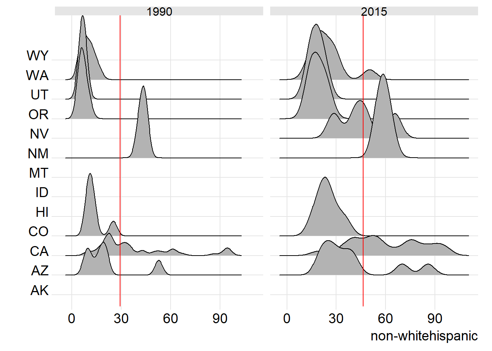
In this graph we can find the percentage of non-white and non-Hispanic people in the years of 1990 and 2015 in the western region of the United States. In the graph of the year 1990, the average is in 30 percentage. In states like Washington, Utah, Oregon and Colorado, the non-white non-Hispanic population is between 5% and 20%. In the case of the New Mexico state, the percentage of population is around 40% or 45%. We can say that all these states have a tendency to stay in the same growth trend. The California states has around 90% of population nonwhite and non Hispanic. This shows a continuous growth trend for the future. The washigton state has a mesokurtic distribution because is neither high nor low, rather it is considered to be a baseline for the two other classifications. Utah, Oregon and New Mexico have a leptokurtic distribution. The Colorado State has a bimodal peak. Finally, we can say that California and Arizona have a Platykurtic distributions. On the other hand, In the graph of the year 2015, the average is in 40 percentage. We can see that states like Utah, Oregon and New Mexico maintain their trend since 1990. In the case of the state of Nevada (which data was not presented in the year 1990). shows one of the highest values of percentage of people not white and not hispanic, like the state of California. This growth trend may be due to the growth of the non-white or non-Hispanic population or to the decrease in the white and Hispanic population. talking about kurtosis, the Washington state has two peaks and the California states has a Platykurtic distribution.
## Reading layer `districts_all' from data source `https://github.com/jshannon75/geog4300/raw/master/Labs/Final_assignment/districts_all.geojson' using driver `GeoJSON'
## Simple feature collection with 877 features and 2 fields
## geometry type: MULTIPOLYGON
## dimension: XY
## bbox: xmin: -179.1489 ymin: -14.5487 xmax: 179.7785 ymax: 71.36516
## epsg (SRID): 4326
## proj4string: +proj=longlat +datum=WGS84 +no_defs## Reading layer `USstates_48' from data source `https://github.com/jshannon75/geog4300/raw/master/Labs/Final_assignment/USstates_48.geojson' using driver `GeoJSON'
## Simple feature collection with 48 features and 8 fields
## geometry type: MULTIPOLYGON
## dimension: XY
## bbox: xmin: -124.7328 ymin: 24.95638 xmax: -66.96927 ymax: 49.37173
## epsg (SRID): 4326
## proj4string: +proj=longlat +datum=WGS84 +no_defs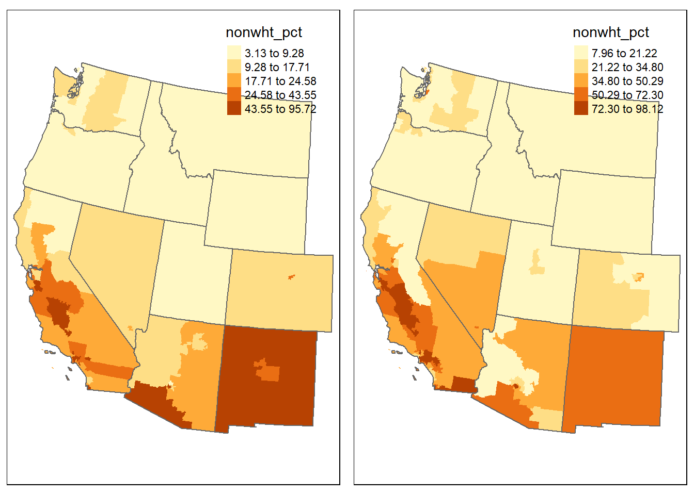
The entire Western region has also been strongly influenced by European, Hispanic or Latino, Asian and Native Americans; it contains the largest number of minorities in the U.S. The West also contains much of the Native American population in the U.S., particularly in the large reservations in the Mountain and Desert States.These graphs shows the distribution by districts of the non-white and non-Hispanic population in the western territory of the United States, during the years 1990 and 2015. The map of the year 1990 indicates that there was a greater presence of non-white population and non-Hispanic in the state of New Mexico. However, in one of its districts in the center of this state shows a lower presence of this population. In some districts of southern Arizona and central California there is a high percentage of non-Hispanic non-white population. In the north of the West region, there is a low percentage of non-Hispanic non-white population. The population distribution by race in the Western United States (2010): 66.4% Non-Hispanic Whites, 28.6% were Hispanic or Latino (of any race), 9.3% Asian, 4.8% Black or African American, 1.9% American Indian or Alaska Native and 12.4% Some other race. In 2015 graphic, we can see that the concentration of the population has decreased but it has expanded throughout the territory. In the state of Arizona, a greater concentration of population can be observed in the south of this state. Likewise, the concentration of population has expanded in the central part of the state of California. The population has expanded to the state of Nevada and Colorado. Nevertheless, there are some states where this population don’t have incremented such as for instance Montana, Wyoming, Idaho and Oregon. We can conclude that the population has expanded significantly over the years.
5.2.2 Median household income
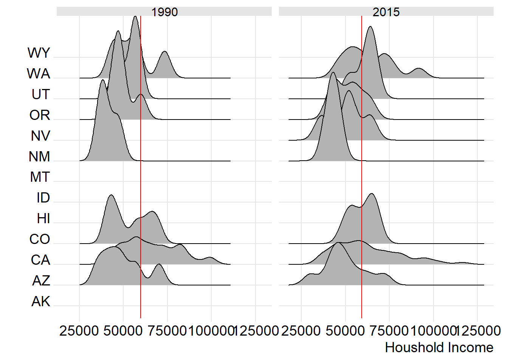
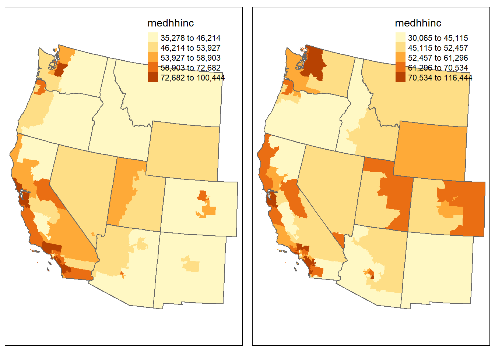
Ridge plot analysis of the median household income variable in 1990 compared to 2015:
According to the ridge plots produced above we can see that in 1990 the mean of median household income of the West Region was around 60,000 dollars. To the right of the median line (or incomes exceeding the median amount) you will notice that there are a few states that peak between the 60,000 and 75,000 dollar range and those data are shown to be more platykurtic and mesokurtic.These states are California, Colorado, and Washington. There are few states that extend beyond the 75,000 dollar mark California being one that trickles over and just grazes the 100,000 dollar line. The most prominent peaks of the ridegelines fall to the left of the median household income line, or people that make less than the mean median income. New Mexico, Utah, and Washington are the most significant with New Mexico’s population peaking around 35,000, Utah’s around 35,00 and Washington around 55,000, just under the median income line. Interestingly in the 2015 ridgeline plot, the average median household income is about the same hovering around 60,000, but the distribution amongst the states differs from what we saw in the 1990 data. We can also describe these data distributions more specifically with the terms platykurtic, mesokurtic and leptokurtic. For example when we look at the data in 2015 for the average median household income for New Mexico, they are very leptokurtic or thin on the ridgeline plot. For the 2015 ridgeline plots the range of incomes is greater than the 1990.
By comparing the two we can see some prevalent shifts. For example, the amount of wealthier districts in the state of California decreased from 1990 to 2015. There was also a meadian household income shift in New Mexico from about 37,000 in 1990 to 41,000 in 2015. Colorado is another state that is interesting to compare from 1990 to 2015. In 1990 Colorado’s mean median household income fell below the average at around 40,000 whereas in 2015 it increased to exceeding the average at around 65,000. As a whole, we can see that there is more variation of income in the 2015 ridge plot. This seems to be consistent with the spatial representation in the tmaps.
Tmap analysis of the medhhinc variable from 1990 to 2015:
The tmaps above provide the data of household income spatially. You can see a distinct shift from 1990 to 2015 in the states of Colorado and Utah for example. In the 1990 map, Colorado appears to predominantly be the lightest shade signifying that the medhhinc range fell between 35,278 and 46,214 whereas in the 2015 map there are no districts in the state that remain that shade. Instead, about half the state shifts to bein a full shade darker with a range of 45,115 and 52,457 for the medhhinc variable. The other half the state is an even darker orange with a range that shifted to 61,296 and 70,534. Utah is really interesting because not only did the medhhinc increase statewide, but the districts flipped flopped in regard to frequency of wealthier incomes. In 1990 the west part of the state had significantly higher median household incomes, but in 2015 the east side of the state drastcially increased to surpass the west side’s 1990 medhhinc. By looking at the maps as whole it is evident that median household income on average increased across the entire region with few exceptions remaining in the same category. The western sliver of Idaho and the bulk of eastern Oregon are examples of these spots. Again, in the tmaps we are able to see the increase in variation of incomes from 1990 to 2015 for the whole of the West Region.
5.2.3 Percent with a bachelor’s degree
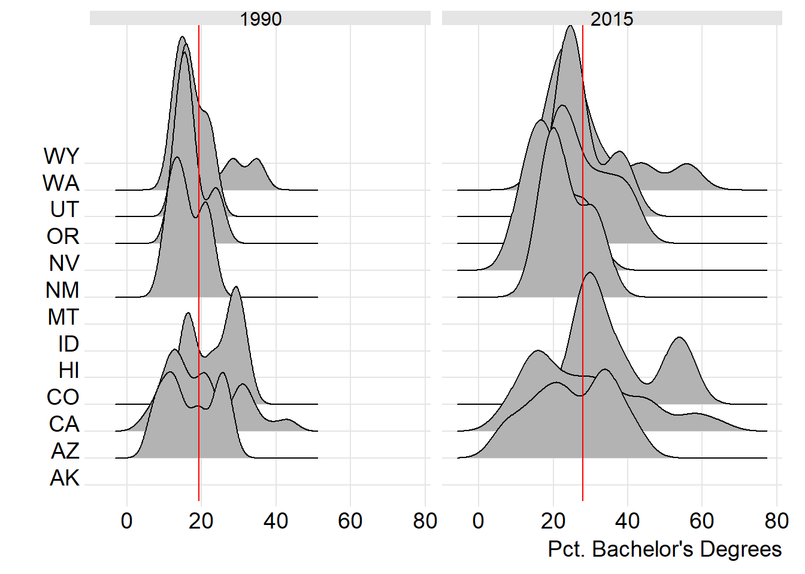
The following states were not included in the ridge plot for both 1990 and 2015: Wyoming, Montana, Idaho, Hawaii, and Alaska. Additionally, Nevada was not graphed in 1990 but rather appears in 2015. I believe this was because these are the locations for which there was less than three congressional districts by which to compare, and hence we did not have a distribution to plot.
Otherwise, the width of the distribution for all of the ridge plots increased between 1990 and 2015, which suggests that there is more variance as to the percentage of people with Bachelor’s degrees across the West U.S. Census Region. This shift is also reflected in how the average across the region increased. Additionally, the peaks of the ridges shifted to the right, also reflecting a general increase in the average level of educational attainment.
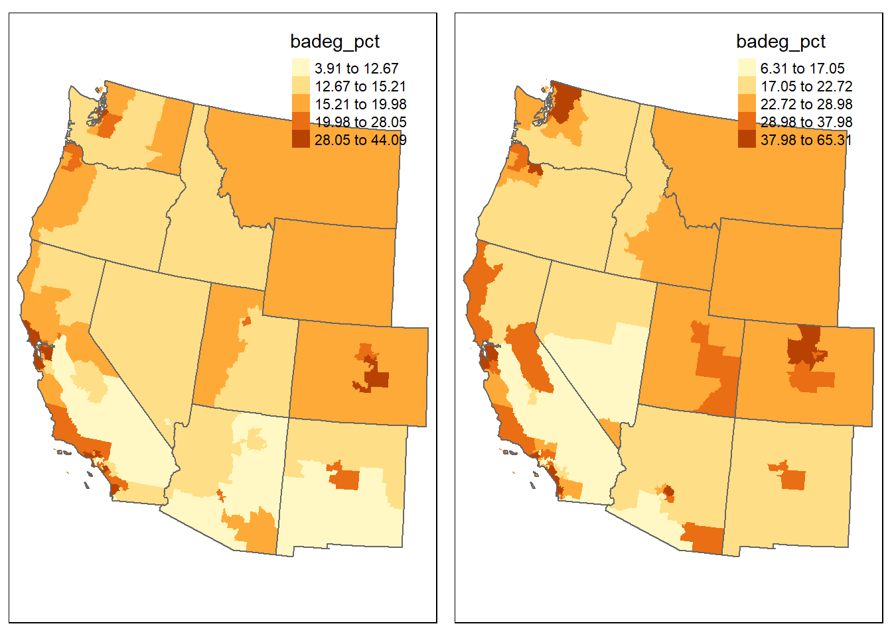
The spatial distribution for the attainment of the Bachelor’s degrees shows a general increase across the region (which is also in the increase of the legend’s percentage brackets based upon quantile intervals), but it also appears to have hotspots which reflect areas of possible higher population, but even more so, areas where there are higher education. These key areas include major cities within states and the coastline, such as with Califoria. Also, there appears to be a lower percentage in areas with depleated populations.
5.3 Models
(Include models for both years and scatterplots/fit lines. Interpret the coefficients and measures of model strength, focusing on direction, magnitude, and significance. Also look at the model residuals using density plots and maps as shown in the assignment.)
5.3.1 Percent not White, non-Hispanic
| Model results | ||
| nonwht | ||
| 1992 | 2016 | |
| (1) | (2) | |
| nonwht_pct | 0.230*** | 0.352*** |
| (0.059) | (0.052) | |
| Constant | 44.627*** | 38.250*** |
| (2.184) | (2.727) | |
| Observations | 90 | 99 |
| R2 | 0.146 | 0.319 |
| Adjusted R2 | 0.136 | 0.312 |
| Residual Std. Error | 13.178 (df = 88) | 12.954 (df = 97) |
| F Statistic | 15.047*** (df = 1; 88) | 45.515*** (df = 1; 97) |
| Note: | p<0.1; p<0.05; p<0.01 | |
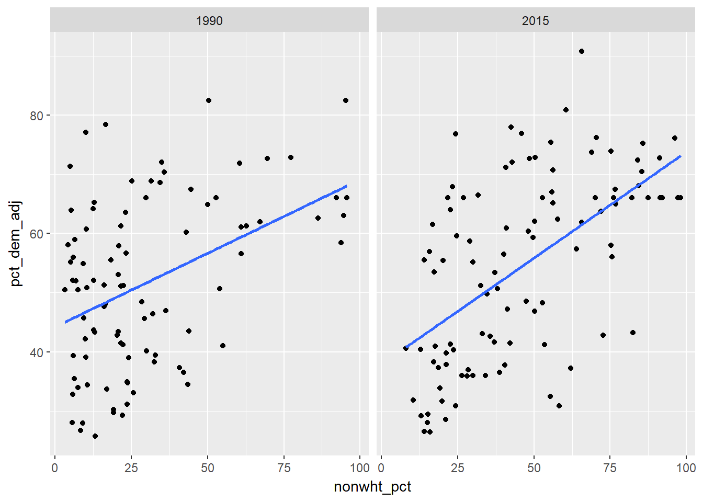
We will consider the relationship between non-white and non-Hispanic population and the democratic vote, during the years 1990 and 2015. The first and second columns of this data contain the population nonwhite and non-Hispanic and democratic votes. Let X denote total democratic votes and Y denote the population. In the graph of the year 1990 as the number of Democratic votes increases, the number of the population increases. In this same sense, for the year 2015 we see a similar scenario. In this graph, it can be seen that as the number of Democratic votes increases, the non-white and non-Hispanic population increase too, but it should be noted that it does increase significantly. No doubt this is because for the 2015 the non-white and non-mestizo population increased. Of course, we have to understand that the number of samples (population nonwhite-nonHispanic in 2015 is greater than 1990. Direction: Both, in the year 1990 and in the year 2015 the direction of the variable non-white and non-Hispanic population is positive. Which means an population increment. Significance: There is an important significance between 1990 and 2015, as we can see between its values (0.230 *** 0.352 ***) the difference goes between 0.122%. Another value that indicates an important significance is the p-value for the year 1990 is <0.1 and for the year 2015 it is <0.05. Magnitude: We can observe that for the year 1990 the population is dispersed, however there is a tendency of the points to be close to the line (average). For the year 2015, the population shows the same dynamics of the year 1900 although a little more dispersed.
5.3.2 Median household income
| Model results | ||
| Pct. voting democratic | ||
| 1992 | 2016 | |
| (1) | (2) | |
| medhhinc | -0.0002* | 0.0001 |
| (0.0001) | (0.0001) | |
| Constant | 61.049*** | 47.115*** |
| (5.901) | (5.901) | |
| Observations | 90 | 99 |
| R2 | 0.033 | 0.017 |
| Adjusted R2 | 0.022 | 0.007 |
| Residual Std. Error | 14.024 (df = 88) | 15.570 (df = 97) |
| F Statistic | 2.995* (df = 1; 88) | 1.647 (df = 1; 97) |
| Note: | p<0.1; p<0.05; p<0.01 | |
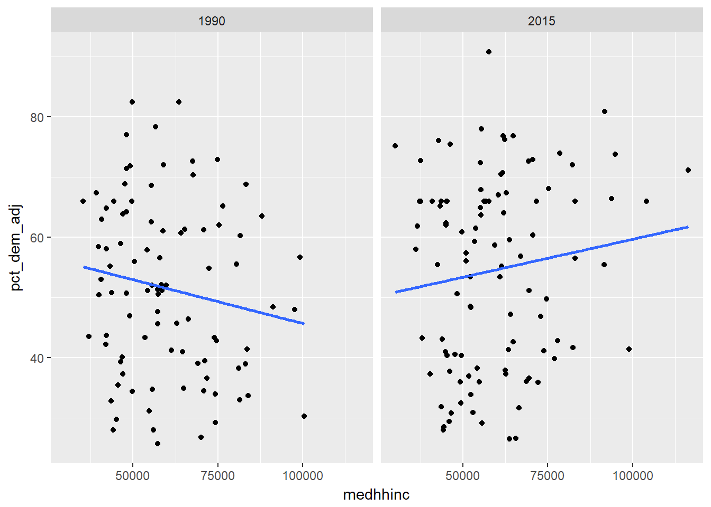
Regression models analysis:
Magnitude: As income increases by 10,000 in 1992, democratic vote goes down 2%, conversely in 2016 as the income increases, the democratic vote also increased.
Direction: For the year 1990 the direction is negative, for 2015 the direction is positive
Significance: For the 1992 model the medhhinc variable does have significance however it is not significant in the 2016 model.
Scatterplot analysis:
Magnitude: Like we saw in the 1992 regression model the 1990 scatterplot visually demonstrates the negative slope, showing that as our incomes increase, the democratic vote decreases. Likewise with our 2016 model, the 2015 scatterplot demonstrates that as our income increases the democratic vote also increases.
Direction:1990 has a negative direction, 2015 has a positive direction
Significance: In the 1990 scatterplot, there is a general directional trend of plots that supports the marginal significance of the medhinc variable we witnessed in the regression model, however in the 2015 scatterplot the plots are pretty dispersed indicating that there is not significance.
5.3.3 Percent with a bachelor’s degree
| Model results | ||
| Pct. voting democratic | ||
| 1992 | 2016 | |
| (1) | (2) | |
| badeg_pct | -0.048 | 0.211* |
| (0.176) | (0.119) | |
| Constant | 52.081*** | 48.494*** |
| (3.717) | (3.665) | |
| Observations | 90 | 99 |
| R2 | 0.001 | 0.032 |
| Adjusted R2 | -0.011 | 0.022 |
| Residual Std. Error | 14.255 (df = 88) | 15.451 (df = 97) |
| F Statistic | 0.073 (df = 1; 88) | 3.182* (df = 1; 97) |
| Note: | p<0.1; p<0.05; p<0.01 | |
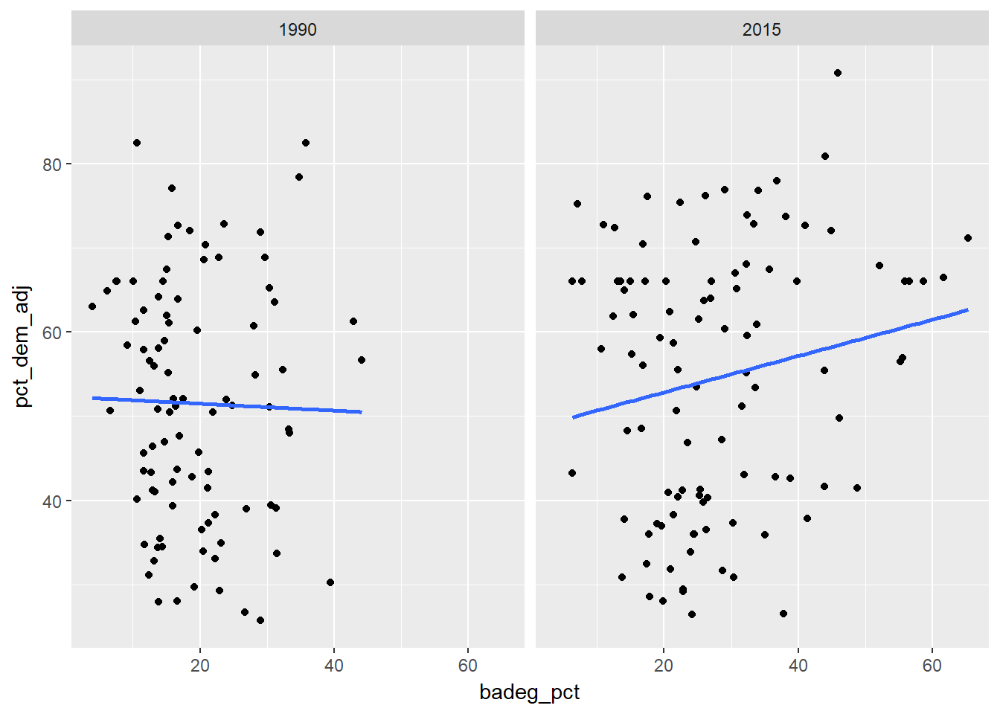
In 1992, the percentage of people with Bachelor’s degrees as it impacts the percentage of people voting democratically has an r2 value of 0.001 (p > 0.1), which suggests that the statistical relationship observed is negligable (it is not sigificant). This is also supported by the F Statistic, in that it was insigificant, and therefore did not matter to the model that the percentage of people with Bachelor’s degrees was unimportant to how people voted democratically.
However, in the 2016 election, there was some significance observed and between the percentage of people with Bachelor’s degrees and how they voted democratically. The relationship was positive (meaning that as the percentage of people with Bachelor’s degrees increased then the number of people who voted democratically also increased). The magnitude of the relationship, albeit still small (coefficient = 0.211) was deemed to be sigificant (0.5 < p < 0.1). Also, the F statistic was sigificant (0.5 < p < 0.1), meaning that it did make a sigificant difference to the model that the percent of people with Bachelor’s degrees trended with the percentage of people who voted democratically.
Both of these models are depicted in the scatter plots above.
5.3.4 Multivariate models
| Model results | ||
| Pct. voting democratic | ||
| 1992 | 2016 | |
| (1) | (2) | |
| badeg_pct | 0.667*** | 0.712*** |
| (0.228) | (0.149) | |
| medhhinc | -0.0004*** | -0.0002* |
| (0.0001) | (0.0001) | |
| nonwht_pct | 0.281*** | 0.455*** |
| (0.060) | (0.049) | |
| Constant | 52.810*** | 26.376*** |
| (5.695) | (5.127) | |
| Observations | 90 | 99 |
| R2 | 0.242 | 0.490 |
| Adjusted R2 | 0.216 | 0.474 |
| Residual Std. Error | 12.557 (df = 86) | 11.326 (df = 95) |
| F Statistic | 9.164*** (df = 3; 86) | 30.474*** (df = 3; 95) |
| Note: | p<0.1; p<0.05; p<0.01 | |
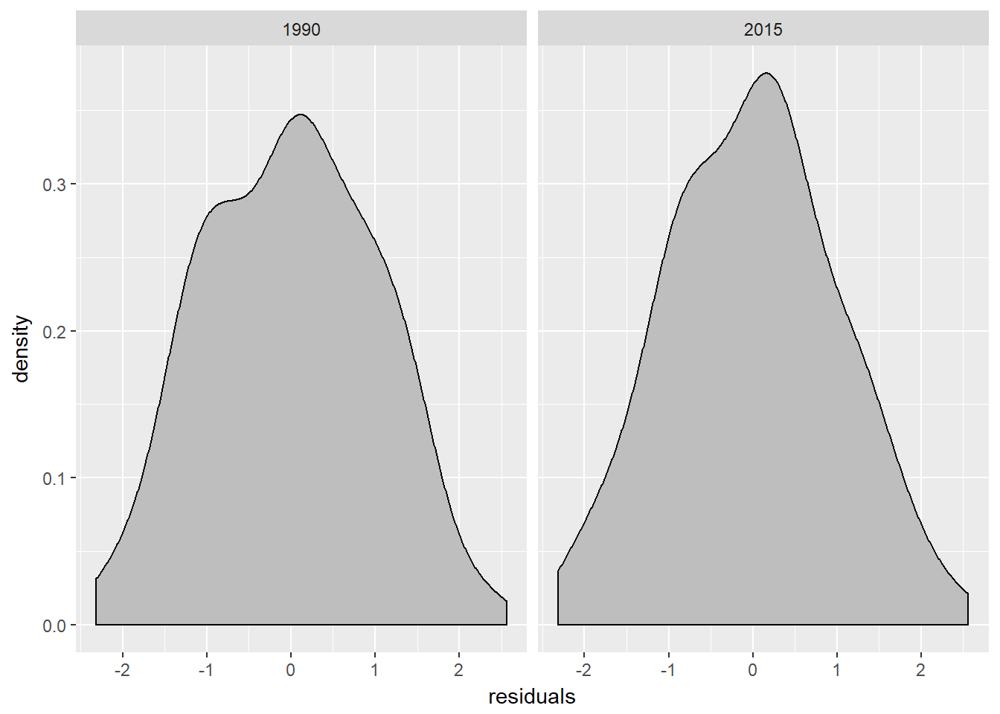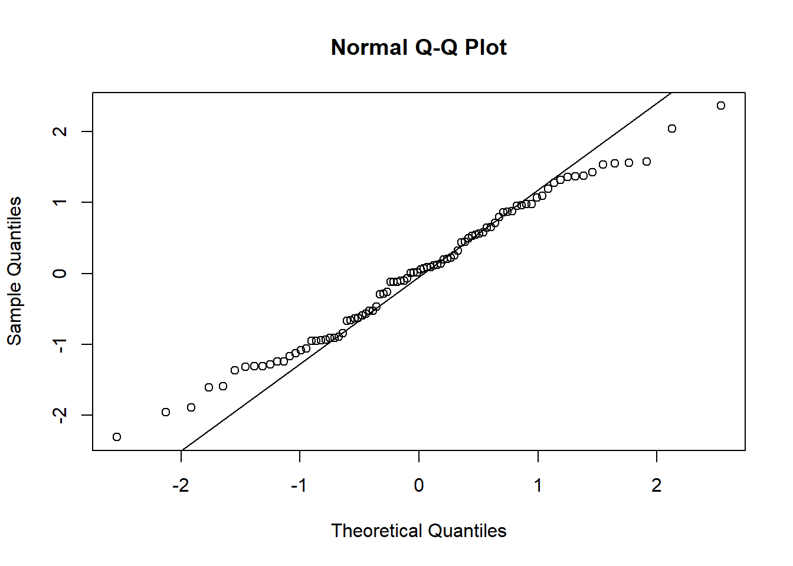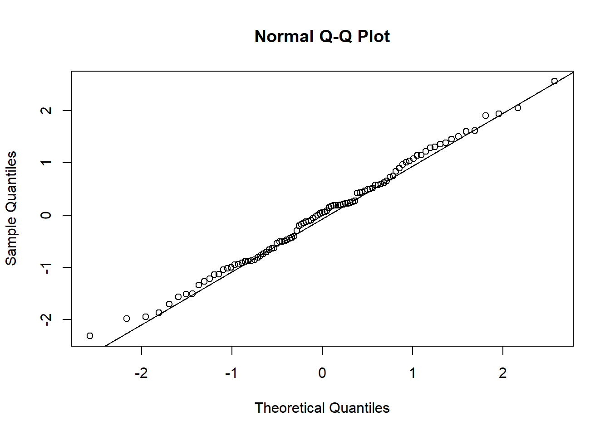
##
## Shapiro-Wilk normality test
##
## data: districts_1990$residuals
## W = 0.98715, p-value = 0.525##
## Shapiro-Wilk normality test
##
## data: districts_2015$residuals
## W = 0.9945, p-value = 0.9614##
## studentized Breusch-Pagan test
##
## data: model1990
## BP = 5.3773, df = 3, p-value = 0.1462##
## studentized Breusch-Pagan test
##
## data: model2015
## BP = 1.2026, df = 3, p-value = 0.7524## badeg_pct medhhinc nonwht_pct
## 2.161737 1.967426 1.143225## badeg_pct medhhinc nonwht_pct
## 2.941821 2.678538 1.163644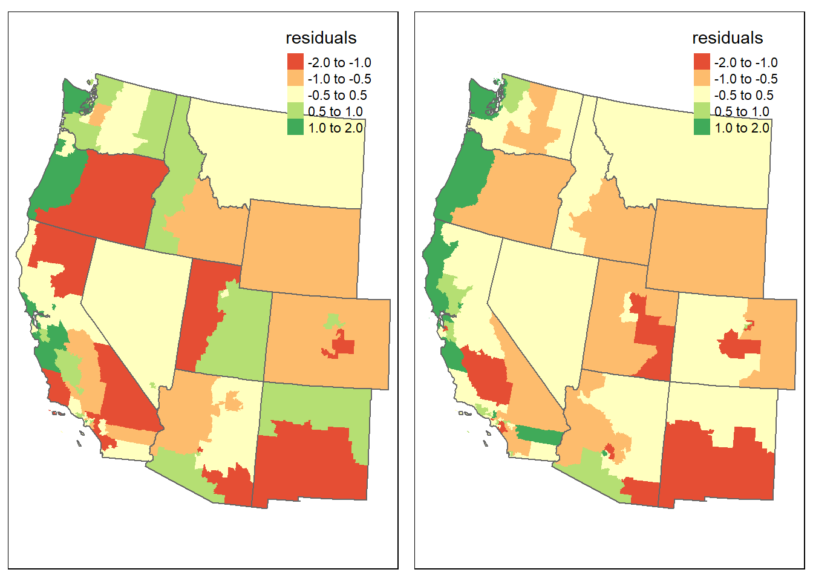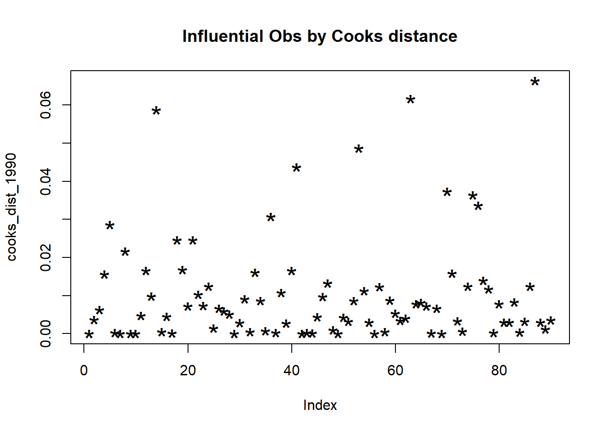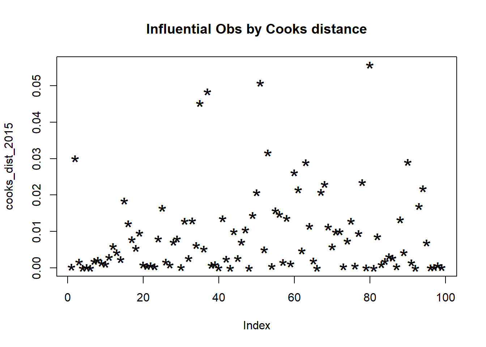 Interpretation of models:
When we look at the models as a whole we can determine that overall all of our variables (the non white percentage, the median household income, and the percent with a bachelor’s degree) are significant and that our F statistics are high indicating that the inclusion of all of the variables is important. We can also see that our data is normal.
1992 Regression Model: The direction of the regression model for the badeg_pct and the nonwht_pct variables are both positive, however for the medhhinc variable it is actually negative. The significance of each variable in the 1992 model is significant. The coefficients for the badeg_pct and the nonwht_pct are higher than the medhhinc however because the medhhinc’s coefficient translates to 10% of 10,000 dollars of household incomes, which is a significant amount, we can conclude that the magnitude of all of the variables is high.
2016 Regression Model: Similarily to the 1992 model, the direction of the badeg_pct and the nonwht_pct variables are positive while the medhhinc variable is negative. Again, like in our 1992 model the significance of all of our variables are significant. Looking at our coefficients for each variable we can also determine that the magnitude in this model for each is high.
Significant problems: We do have a few outliers evident. Spatially we can see that the outliers appear to be along the coast. With regard to heterosketasticity we fail to reject the null hypotheses because we do not have heterosketasticity evident based on our bptest. We also do not have multicolinearity in our viff test because each variable for each year is less than 4.
5.4 Summary
There are many similarities between percent of non white and non hispanic population and Percent with a bachelor’s degree and Median household income. For example in New Mexico and Arizona, both in 1990 and 2015 years the states which have a high non white non hispanic population have a low percent bachelor’s degree. On the other hand, the median household income is very related with the non white and non hispanic population because in states where there are low incomes (such as New Mexico) where there is a high Percent not White, non-Hispanic population. We can conclude that poverty goes hand in hand with the low level of education and that it is usually present in states where the white population (mainly) and the Hispanic population is low, maybe related to other demographic categories.